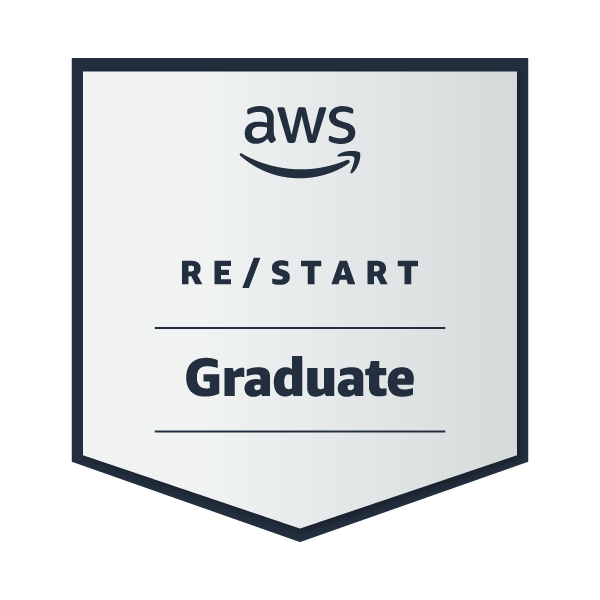
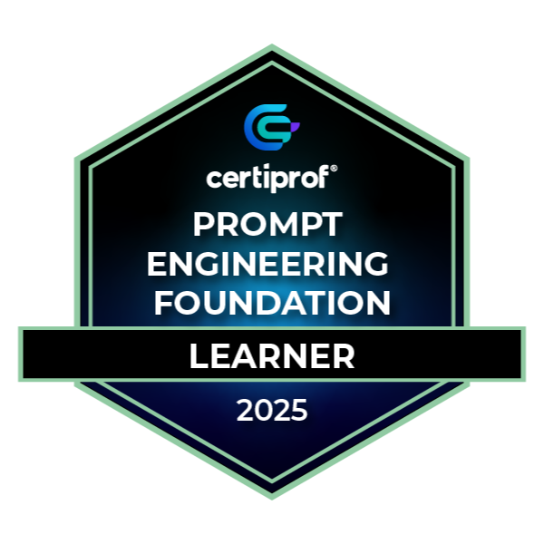
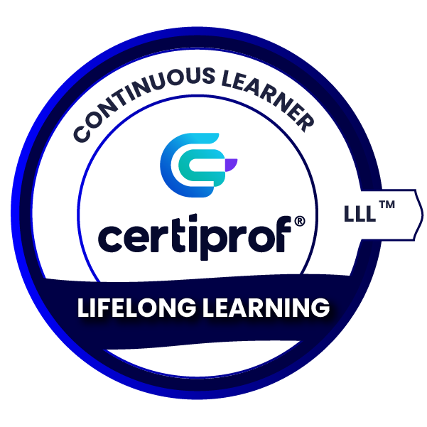
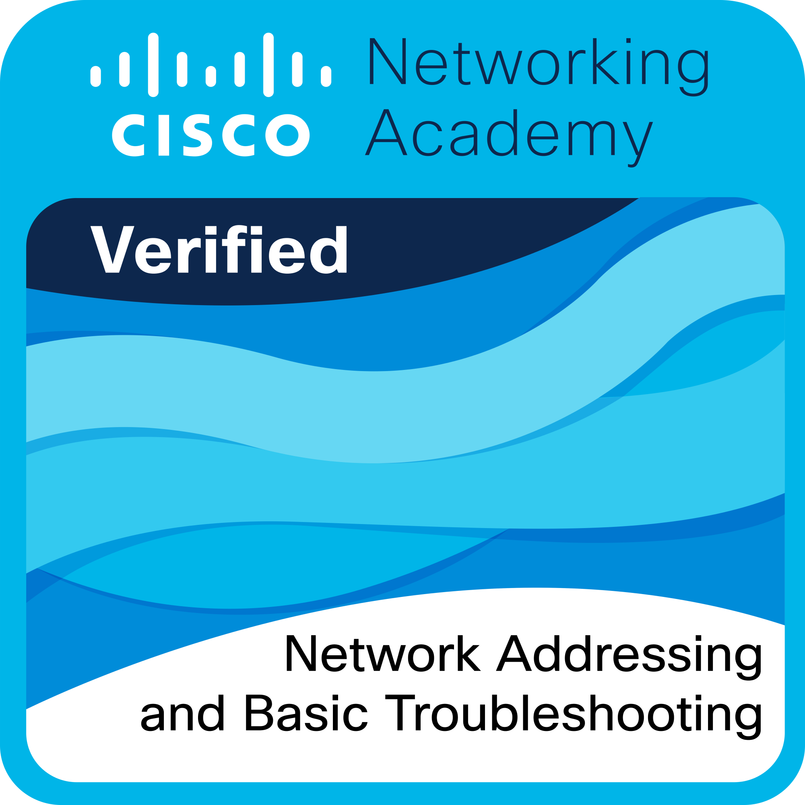
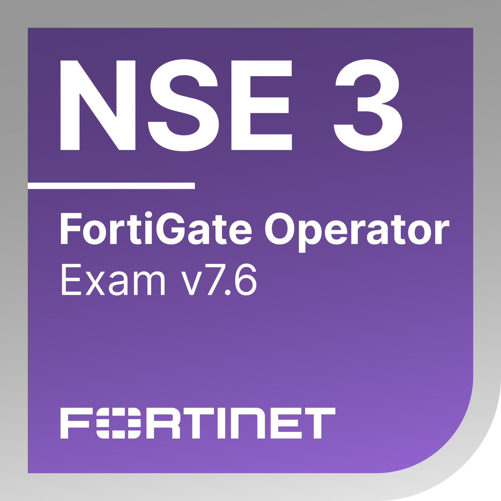
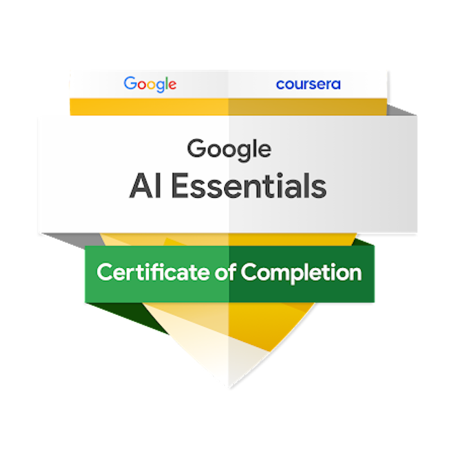
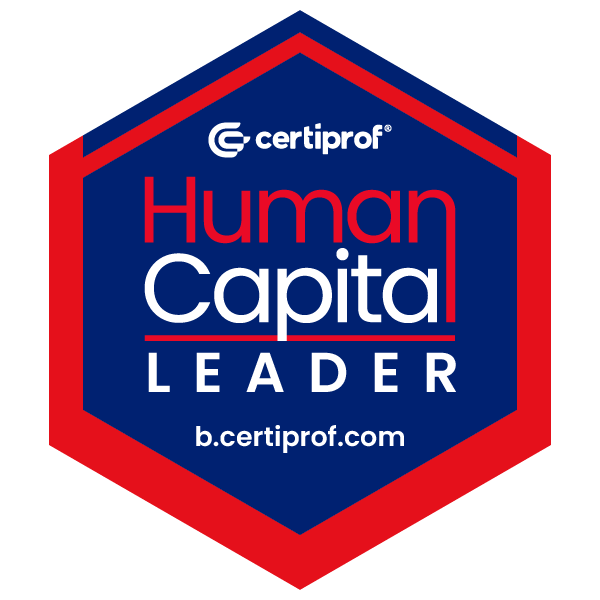
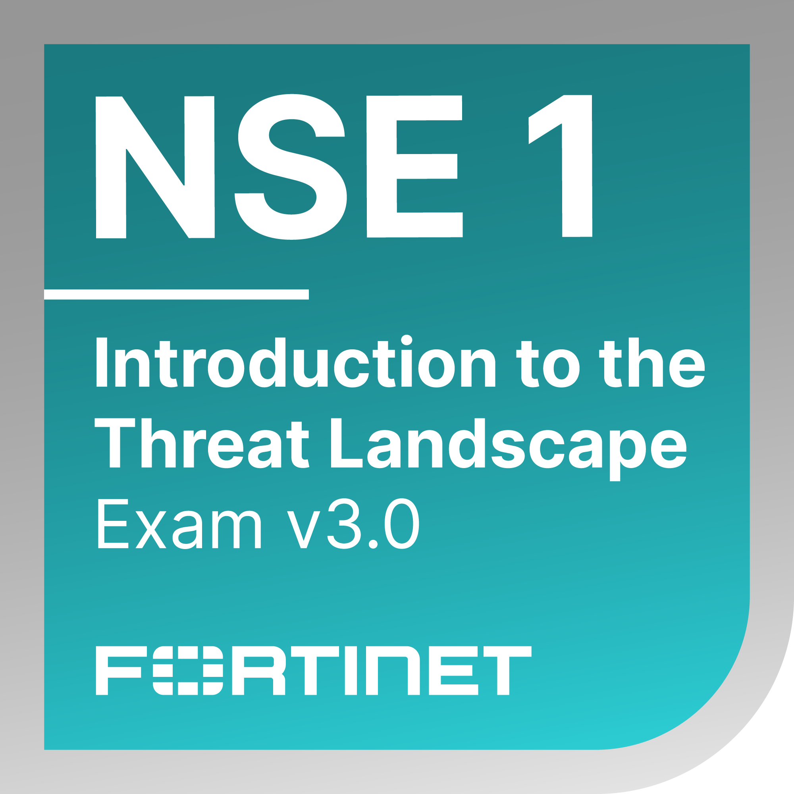
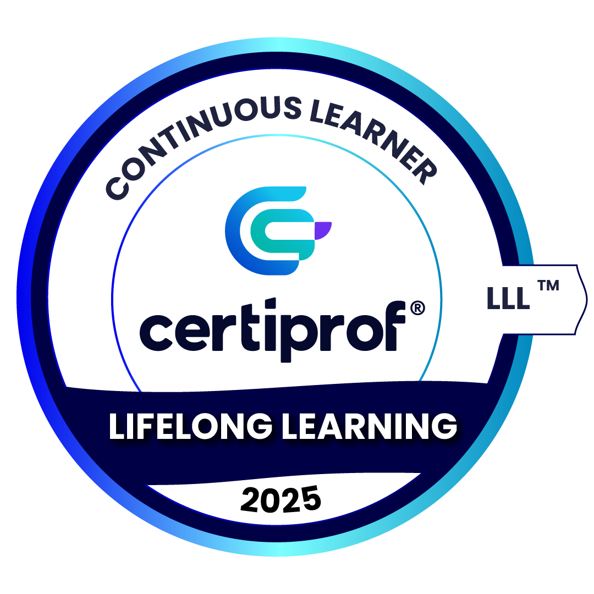

Community & Leadership
Here is a summary...
There is an eclectic variety of studies and activities, ranging from engineering to massage therapy, amidst a bit of pedagogy, volunteer activities, and much more.
Sumary
Ing. Kyska Harrington
I am an education enthusiast, I believe that the road to success is part of sacrifices and preparation, I am currently preparing my certification in AI..
- Uberlândia,Minas Gerais, BR
- kyska.nataly@hotmail.com
Education
Postgraduate in Cybercrime and Cybersecurity: Prevention and Investigation of Digital Crimes
2025 - 2026
Faculvale, Brazil (In Progress)
A postgraduate program in cloud computing provides in-depth knowledge and skills in designing, managing, and optimizing cloud-based solutions for businesses and organizations.
Postgraduate in Cybersecurity: Threat Detection and Protection of IT and Communication Systems
2025 - 2026
Faculvale, Brazil (In Progress)
A postgraduate program in cloud computing provides in-depth knowledge and skills in designing, managing, and optimizing cloud-based solutions for businesses and organizations.
Postgraduate in ARTIFICIAL INTELLIGENCE
2025 - 2026
Faculvale, Brazil (In Progress)
A postgraduate program in cloud computing provides in-depth knowledge and skills in designing, managing, and optimizing cloud-based solutions for businesses and organizations.
Postgraduate in Cloud Computing
2024 - 2025
Faculvale, Brazil (In Progress)
A postgraduate program in cloud computing provides in-depth knowledge and skills in designing, managing, and optimizing cloud-based solutions for businesses and organizations.
Systems Engineering
2017
UNEXPO, Venezuela
The systems engineer deals with the design, programming, implementation, and maintenance of systems. It incorporates modern methods and techniques to optimize economic performance.
DevOps Carrer
2023
Ubuntu Academy, Online
The course covers 8 modules, DevOps, concepts, Kubernetes, CI/CD pipelines, Cloud COmputing / AWS / AZURE, Monitoring, Infrastructure as code, Agile Teams, Job Exit.
Verified Digital Badges
Public achievements verified by Credly. Select any badge to view its official credential.
 AWS Certified Cloud Practitioner
Amazon Web Services
AWS Certified Cloud Practitioner
Amazon Web Services

AWS re/Start Graduate Amazon Web Services
Prompt Engineering Foundation Learner 2025 Certiprof
Lifelong Learning Certiprof Network Technician Career Path
Cisco
Network Technician Career Path
Cisco
 Introduction to IoT
Cisco
Introduction to IoT
Cisco
 Networking Basics
Cisco
Networking Basics
Cisco
 Networking Devices and Initial Configuration
Cisco
Networking Devices and Initial Configuration
Cisco

Network Addressing and Basic Troubleshooting Cisco Network Support and Security
Cisco
Network Support and Security
Cisco
 Cisco Networking Academy Learn-A-Thon 2026
Cisco
Cisco Networking Academy Learn-A-Thon 2026
Cisco
 Cyber Threat Management
Cisco
Fortinet Certified Associate Cybersecurity
Fortinet
Fortinet Certified Fundamentals Cybersecurity
Fortinet
Cyber Threat Management
Cisco
Fortinet Certified Associate Cybersecurity
Fortinet
Fortinet Certified Fundamentals Cybersecurity
Fortinet

Fortinet FortiGate 7.6 Operator Fortinet Getting Started in Cybersecurity 3.0
Fortinet
Getting Started in Cybersecurity 3.0
Fortinet

Google AI Essentials V1 Coursera
Human Capital Leader Certiprof Introduction to Cybersecurity
Cisco
Introduction to Cybersecurity
Cisco

Introduction to the Threat Landscape 3.0 Fortinet
Lifelong Learning 2025 CertiprofDIO Campus Expert Events
Community & Leadership
DIO Campus Expert 10
Other Courses
- Massagem Relaxante, Instituto Experience LTDA, 05 h. 12/2020
- Drenagem Linfática, Instituto Experience LTDA, 05 h. 12/2020
- Drenagem Facial, Instituto Experience LTDA, 05 h. 12/2020
- Massagem Redutora, Instituto Experience LTDA, 05 h. 12/2020
- Massagem Terapêutica, Instituto Experience LTDA, 05 h. 12/2020
Professional Experience
Level 1 Customer Relationship Assistant.
03/2025 - Now
Algar Telecom, Uberlândia, MG
- I handle inbound calls from B2B clients and small business owners to troubleshoot issues related to internet, telephony, and security services such as firewalls, cloud phone solutions, and Microsoft licenses.
- I create support tickets and perform proper ticket escalation when necessary.
- I perform active monitoring of customer circuits that include contracted NOC services using Zabbix.
Frontend Developer
08/2025 - 12/2025
Digital AidKid, Online
- I create responsive user interfaces using HTML, CSS, and JavaScript, ensuring optimal display across different devices and browsers.
- I optimize code and applications for maximum speed, scalability, and performance.
- I collaborate with UX/UI designers and backend developers to integrate user-friendly interfaces with functional systems.
Network Support Specialist (NOC)
02/2022 - 10/2024
EdgeUno, Uberlândia, MG
- Continuously monitored network performance, identifying connectivity issues, latency, and other key performance indicators (KPIs).
- Ensured optimal network performance by addressing and resolving potential bottlenecks proactively.
Cook
01/11/ 2021- 29/01/ 2022
Lanchonete DeGasperi, Medianeira, PR
- Preparing different savory snacks.
- General cleaning.
CRM System Implementation Specialist
05/2020 - 10/2020
Unicesumar, Medianeira, PR
- Implemented a CRM system for the franchise owner to streamline operations across multiple locations.
- Evaluated customer service performance and introduced measures to improve customer satisfaction.
Production assistant
09/2019 - 07/2021
FRIMESA, Medianeira, PR
- Production of products, distribution and supply of materials on the line, various cuts of pork.
Income Assurance Consultant
11/2017 - 10/2019
Cantv, Caracas, VE
- Audited system-level platforms and business processes across the revenue cycle to identify incidents or vulnerabilities.
- Ensured service quality by identifying and rectifying discrepancies, including potential fraud risks.
- Performed reconciliations and functional tests of processes for platforms such as VOICE, DATA, SMS, CRM, HLR, and Triple AAA.
- Led the development of a system to optimize daily operations, serving as Scrum Master for the project.
Information Security Specialist (SOC)
2017 - 2018
CANTV, Caracas, VE
- Monitored security consoles to detect abnormal traffic across CANTV, Movilnet, and Caveguías networks.
- Analyzed general alerts using Snort and IDS signatures.
- Verified and authenticated VPN users, ensuring proper usage.
- Utilized tools such as Putty, Mouse, NetworkMiner, Xplico, and Nmap for IP and MAC address analysis.
- Conducted web monitoring and investigated security incidents, including web attacks, viruses, and MAC cloning.
- Developed and documented security procedures for improved operational efficiency.
Full-time science teacher
09/2004 - 06/2008
U.E.P. Maria Montessori, Caracas, VE
- Planning classroom work, teaching classes, carrying out student assessments, fieldwork for the last high school courses and assessment of the TCC.
- Taught classes in Biology, Chemistry and Health Education.
Full-time science teacher
11/2003 - 08/2004
U.E.P. Colegio Iberoamericano, Caracas, VE
- Planning classroom work, teaching classes, carrying out student assessments, fieldwork for the last high school courses and assessment of the TCC.
- Taught classes in Physics and Mathematics.
Full-time science teacher
09/2001 - 10/2003
U.E.P. Santa Ana del Junquito, Caracas, VE
- Planning classroom work, teaching classes, carrying out student assessments, fieldwork for the last high school courses and assessment of the TCC.
- Taught classes in Physics and Mathematics.
Volunteer Work
Secretary of Relief Society
Currently serving as secretary in the Relief Society, helping to organize meetings and events for women in the congregation. I strive to foster an environment where women can come together to uplift each other and strengthen their relationship with God.
Volunteer Gospel Instructor
Currently teaching classes on the Gospel, focusing on how its principles can bring lasting joy, peace, and fulfillment to individuals and families.
Counselor of Young Women
Assisted in organizing spiritual and educational programs for young women, providing mentorship and guidance. My goal was to help them recognize the profound impact the Gospel has on their personal happiness and well-being.
President of Primary
Led and coordinated activities for children, fostering a positive learning environment and spiritual growth. Focused on teaching the values of the Gospel to help young ones understand its importance in their lives.
Leader of Camp for Special Children
Worked as a leader in a summer camp for children who were burned, organizing activities and providing emotional support. My goal was to help these children experience healing, both physically and spiritually, by sharing the hope and peace found in the Gospel.
Peer Tutor for High School and University Students
Tutored fellow students in subjects like Chemistry, Mathematics, and Humanities, with a focus on helping them succeed academically while encouraging them to see the bigger picture of how education can enhance their lives and their ability to serve others.
Features
I'm interested in